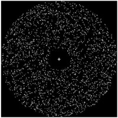
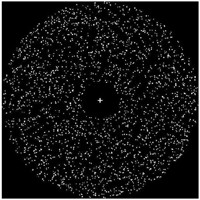
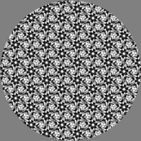

Active Projects
Developmental Dynamics of Optic Flow Processing
 

Visual motion provides humans and animals with information about their own movement through 3D space and about the structure of the environment -- the objects, surfaces, and other animals that it may contain. How the human brain processes complex motion information poses an as-yet unanswered question. This project focuses on characterizing how sensitivity to visual motion emerges in the developing human brain: how brain (EEG) responses to patterns of ego- and object motion emerge, how they develop from infancy through childhood into adulthood, how specific changes in cortical circuitry might account for the observed patterns, and how behavioral sensitivity to motion corresponds to neural activation. The studies compare brain responses and behavioral discrimination patterns in infants, children, and adults to the same types of ego- and object motion. The studies also involve an effort to measure or simulate the statistics of optic flow experienced by infant, child, and adult observers in complex, natural environments using computer vision methods.
Publications
- Gilmore, R.O., Thomas, A.L., & Fesi, J.D (2016). Children's brain responses to optic flow vary by pattern type and motion speed. PLoS ONE. doi: 10.1371/journal.pone.0157911. Materials on Databrary at http://doi.org/10.17910/B7QG6W.
- Gilmore, R.O., Raudies, F., & Jayaraman, S. (2015). What Accounts for Developmental Shifts in Optic Flow Sensitivity? Proceedings of the IEEE International Conference on Development and Learning and Epigenetic Robotics. doi:10.1109/DEVLRN.2015.7345450. Materials on Databrary at doi:10.17910/B7988V.
- Fesi, J.F., Thomas, A.L., & Gilmore, R.O. (2014). Cortical responses to optic flow and motion contrast across patterns and speeds. Vision Research, 100, 56–71. doi:10.1016/j.visres.2014.04.004. Materials on Databrary.
- Raudies, F. & Gilmore, R.O. (2014). Visual motion priors differ for infants and mothers. Neural Computation, 26(11), 2652-2668. doi:10.1162/NECO_a_00645.
- Raudies, F., Gilmore, R.O., Kretch, K.S., Franchak, J.M, & Adolph, K.E. (2012). Understanding the development of motion processing by characterizing optic flow experienced by infants and their mothers. Proceedings of the IEEE International Conference on Development and Learning. doi:10.1109/DevLrn.2012.6400584.
Presentations
- Gilmore, R.O., Fared, D.A., Dexheimer, M.G., & Seisler, A.R. (2016, November). The appearance and disappearance of visual forms defined by differential motion evokes distinctive EEG responses in school-age children. Presentation at the Society for Neuroscience meeting in San Diego, CA. PDF.
- Gilmore, R.O. (2016, October). Go with the flow: The development of behavioral sensitivity and brain responses to optic flow. Talk at the Penn State Action club meeting. HTML slides.
- Jayaraman, S., Gilmore, R.O., & Raudies, F. (2016, May). Changes in early optic flow experiences across development and culture. Talk at the International Congress on Infant Studies (ICIS) in New Orleans, LA. HTML slides.
- Gilmore, R.O. (2016, September). Open Science Practices Have Made My Work Better. Talk at the Penn State Psychology Cognitive Area brown bag. HTML slides.
- Adamiak, W., Thomas, A.L., Patel, S.M., & Gilmore. R.O. (2015, May). Adult observers’ sensitivity to optic flow varies by pattern and speed. Poster presented at the Vision Sciences Society meeting, St. Pete's Beach, FL. PDF. Materials on Databrary.
- Raudies, F. & Gilmore, R.O. (2014, May). An analysis of optic flow experienced by infants during natural activities. Poster presented at the Vision Sciences Society meeting, St. Pete Beach, FL. PDF
- Thomas, A.L., Fesi, J.D. & Gilmore, R.O. (2014, May). Temporal and Speed Tuning in Brain Responses to Local and Global Motion Patterns. Poster presented at the Vision Sciences Society meeting, St. Pete Beach, FL.
- Fesi, J.D., Thomas, A.L., & Gilmore, R.O. (2012, October). Distinct space-time sampling thresholds of VEP responses to optic flow. Poster presented at the Society for Neuroscience meeting, New Orleans, LA. PDF
- Gilmore, R.O., Raudies, F., Kretch, K.S., Franchak, J.M., & Adolph, K.E. (2012, June). Do you see what I see? Comparing optic flow experienced by infants and their mothers. Poster presented at the International Conference on Infant Studies, Minneapolis, MN. PDF.
- Fesi, J.D., Stiffler, J.R., & Gilmore, R.O. (2012, May). Speed tuning of cortical responses to 2D figures defined by motion contrast is non-uniform across contrast types. Poster presented at the Vision Sciences Society meeting, Naples, FL.
- Thomas, A.L., Mancino, A.C., Elnathan, H.C., Fesi, J.D., Hwang, K.R., & Gilmore, R.O. (2012, May). Children’s cortical responses to optic flow patterns show differential tuning by pattern type, speed, scalp location, and age group. Poster presented at the Vision Sciences Society meeting, Naples, FL. PDF.
- Gilmore, R.O., Raudies, F., Kretch, K.S., Franchak, J.M., & Adolph, K.E. (2012, May). Patterns of optic flow experienced by infants and their mothers during locomotion. Poster presented at the Vision Sciences Society meeting, Naples, FL. PDF.
- Raudies, F., Kretch, K.S., Franchak, J.M., Mingolla, E., Gilmore, R.O., & Adolph, K.E. (2012, May). Where do mothers point their head when they walk and where do babies point their head when they are carried? Poster presented at the Vision Sciences Society meeting, Naples, FL. PDF.
Materials
Collaborators
- Florian Raudies, Hewlett-Packard Research
- Swapnaa Jayaraman, Indiana University
- Amanda Thomas, Swarthmore College
- Jeremy Fesi, CUNY
Support
This project is supported by the National Science Foundation under grant BCS-1147440.
Computational Symmetry
 
The ability to sense regular or near-regular patterns serves critical biological needs and is equally important for computer vision and machine intelligence. Despite wide variation in the types of regularity present in natural images, research on human and computer processing of pattern regularity has focused primarily on detecting bilateral reflection symmetry, using largely atheoretical approaches. The goals of this interdisciplinary research are to i) use principles of group theory to develop a conceptual framework for understanding regularity perception and brain activation in humans, and ii) to design general computer-based symmetry detection algorithms that can operate at a level of practical usability.
Presentations
- Vedak, S.C., Gilmore, R.O., Kohler, P.J., Liu, Y., & Norcia, A.M. (2015, May). The salience of low-order visual features in highly self-similar wallpaper groups. Poster presented at the Vision Sciences Society meeting, St. Pete Beach, FL. PDF. Materials on Databrary.
- Thomas, A.L., Gilmore, R.O., Norcia, A.M., Liu, Y., Fesi, J.D., Hwang, K.D., Stitt, J., & Liu, J. (2012, October). Visual patterns with rotational symmetry activate distinct cortical regions. Poster presented at the Society for Neuroscience meeting, New Orleans, LA.
Collaborators
- Yanxi Liu, Penn State Computer Science & Engineering
- Anthony Norcia, Stanford University, Department of Psychology
Support
This project is supported by the National Science Foundation under grant IIS-1248076.

The Databrary Project aims to increase scientific transparency and accelerate discovery in developmental science by building the infrastructure for researchers to share video data and related meta-data. The project has five specific aims:
- Create a web-based data library for sharing and preserving video data and associated meta-data.
- Create participant and contributor/user standards that enable open sharing of video data while limiting access to authorized users to ensure participant confidentiality.
- Expand the free, open source video coding software, Datavyu to enable coding, exploring, and analyzing video data.
- Build a data management system to support data sharing within labs, among collaborators, and in the Databrary repository.
- Transform the culture of developmental science by building a community of researchers committed to open video data sharing.
Databrary is an open-source software project. Penn State is one of the major "nodes", with a large number of authorized users.
Publications
- Gilmore, R.O., & Adolph, K.E. (in press). Open sharing of research video: Breaking the boundaries of the research team, in Advancing Social and Behavioral Health Research through Cross-disciplinary Team Science: Principles for Success. Hall, Kara, Croyle, R., & Vogel, A. (Eds.). Springer.
- Gilmore, R.O., Adolph, K.E., & Millman, D.S. (2016). Curating identifiable data for sharing: The Databrary project. In Proceedings of the 2016 New York Scientific Data Summit. PDF of paper.
- Gilmore, R.O., Adolph, K.E., & Millman, D.S. (2016). Transforming education research through open video data sharing. Advances in Engineering Education, 5(2). HTML.
- Gilmore, R.O. (2016). From big data to deep insight in developmental science. Wiley Interdisciplinary Reviews Cognitive Science. DOI: 10.1002/wcs.1379.
- Gordon, A., Millman, D.S., Steiger, L., Adolph, K.E., & Gilmore, R.O. (2015). Researcher-library collaborations: Data repositories as a service for researchers. Journal of Librarianship and Scholarly Communication. doi:10.7710/2162-3309.1238.
- Adolph, K.E., Gilmore, R.O., Freeman, C., Sanderson, P., & Millman, D. (2012). Toward Open Behavioral Science, Psychological Inquiry: An International Journal for the Advancement of Psychological Theory, 23(3), 244-247. doi:10.1080/1047840X.2012.705133.
Presentations
- Gilmore, R.O. (2016, October). The future of big data in developmental science. Talk given at a meeting of the Penn State Child Study Center (CSC) faculty. HTML slides.
- Gilmore, R.O. (2016, September). Donald Rumsfeld and the promise of a 'big data' science of human behavior. Talk given at a meeting of the Stochastic Modeling and Computational Statistics (SMACS) group, Department of Statistics. HTML slides.
- Gilmore, R.O., Adolph, K.E., & Millman, D.S. (2016, August). Curating identifiable data for sharing: The Databrary project. In Proceedings of the 2016 New York Scientific Data Summit. HTML slides. PDF of paper.
- Gilmore, R.O., Adolph, K.E., & Millman, D. (2016, May). Video doesn't lie: Reproducible workflows with Databrary. Talk given at the NYU Data Science Center Symposium on Reproducibility. HTML slides
- Gilmore, R.O., Adolph, K.E., Millman, D.S., Steiger, L., & Simon, D.A. (2015, May). Sharing displays and data from vision science research with Databrary. Poster presented at the Vision Sciences Society meeting, St. Pete Beach, FL. PDF.
Collaborators
- Karen Adolph, New York University, Co-Principal Investigator and Project Director
- David Millman, New York University, Co-Investigator.
Support
This project is supported by the U.S. National Science Foundation (NSF) Grant No. BCS-1238599 and the Eunice Kennedy Shriver National Institute of Child Health and Human Development under Cooperative Agreement 1-U01-HD-076595-01.
The Proximal Emotional Environment Project (PEEP)
A 5-year-old overhears her parents arguing loudly in the next room. She may not understand why they are arguing, but she realizes something is wrong because she perceives anger in their voices. Exposure to interpersonal conflict is consistently associated with less skillful emotion regulation in children although the mechanisms remain to be explained. Because inter-personal conflict is a heterogeneous phenomenon, investigation of the specific features of conflict that contribute to developmental pathways to emotional dysfunction and symptoms requires a process-oriented approach. In this project, we focus on brain responses to angry prosody in natural speech. We are studying young children’s neural processing of angry prosody, spoken by mothers and strangers, as a first step toward a future longitudinal study investigating how the neurocognitive processing of angry prosody mediates relations between conflict exposure in children and the development of anxiety- and anger-related symptoms.
Collaborators
- Pamela Cole, Penn State
- Koraly Perez-Edgar, Penn State
- Suzy Scherf, Penn State
- Michelle Vigeant, Penn State
Support
This project has received support from the Penn State Social Sciences Research Institute and the National Institute of Mental Health under R21-MH-104547.
Materials